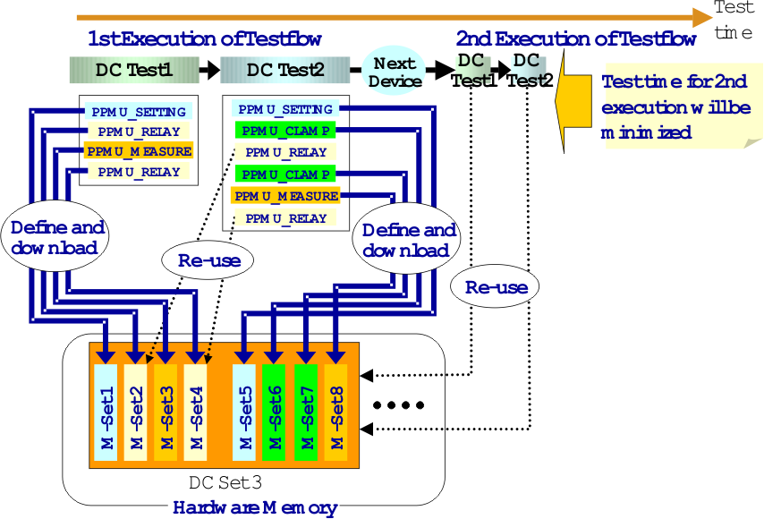

Using DC Sets Economically: DC Sets and Measurement Sets
If a testflow containing several DC tests is to be executed in a loop, and the measurement parameters are to be downloaded only once, these parameters must be stored at different locations in order that the parameters of all tests are available for the second and all subsequent testflow repetitions. Most DC test API's achieve this by creating a new DC set for every additional test. But some PPMU API's use the DC sets more economically, as will now be explained.
The totality of the PPMU test settings can be divided into four groups whose definition can be assigned to different tasks. These subsets are
- Setting up the measurement parameters (for example, measurement type, limits for judgment),
- Controlling the relays,
- Defining the result type (for example, global PASS/FAIL or value)
- Controlling the voltage clamp circuit of the PPMU (only required for Pin Scale systems)
The DC task API's
- PPMU_SETTING
- PPMU_RELAY
- PPMU_MEASURE
- PPMU_CLAMP
implement each of these tasks (in this order) as a measurement set within a DC set. One DC set can contain up to 10 measurement sets.
The DC task API's minimize the number of required DC sets in three ways:
- They create a new DC set only if the set created last is full, that is, already contains 10 tasks. Otherwise, they put their measurement set into this already existing DC.
- They take care that no duplicates are created. If the measurement set that would result from their input parameters already exists in some DC set, this existing set will be used when the test is executed. This holds for all PPMU tests within the testflow (not only within one test method) that are defined with the specified API's.
- It is possible to modify a measurement set temporarily by changing the values of an already defined parameter. After execution of the modified measurement set, its original values will be restored.
The first two features are automatically effective. For the third, the test method must be programmed appropriately. This will be explained in more detail in Managing DC Tests with Variable Parameters.
In order to download and execute the measurement sets, you must define a class object of the TASK_LIST API, add the class objects of the DC task API's to it, and then call the TASK_LIST member function execute().
The following figure shows how the two DC tests of the scenario discussed in DC set management can share one DC set if they are defined with the DC task API's.

The following are two example test methods for this scenario. The method for the first test could be:
PPMU_SETTING setting1;
setting1.pin("p2").iRange("100 uA");
setting1.pin("p2").vForce(1 mV).min(8 uA).max(80 uA);
PPMU_RELAY relay1;
relay1.pin("p2").status("PPMU_ON");
relay1.wait(1.3 ms);
PPMU_MEASURE measure1;
measure1.pin("p2").execMode(TM::GPF);
PPMU_RELAY relay2;
relay2.pin("p2").status("PPMU_OFF");
relay2.wait(0.3 ms);
TASK_LIST task1;
task1.add(setting1).add(relay1).add(measure1).add(relay2);
task1.execute( );
Boolean pass_fail = measure1.getPassFail();
The method for the second test could look as follows:
PPMU_SETTING settingA;
settingA.pin("p2").iRange("100 uA");
settingA.pin("p2").iForce(10 uA).min(50 mV).max(100 mV);
PPMU_CLAMP clampA;
clampA.pin("p2").status("CLAMP_ON").
low(30 mV).high(120 mV);
PPMU_RELAY relayA;
relayA.pin("p2").status("PPMU_ON");
relayA.wait(1.3 ms);
PPMU_CLAMP clampB;
clampB.pin("p2").status("CLAMP_OFF");
PPMU_MEASURE measureA;
measureA.pin("p2").execMode(TM::GPF);
PPMU_RELAY relayB;
relayB.pin("p2").status("PPMU_OFF");
relayB.wait(0.3 ms);
TASK_LIST taskA;
taskA.add(settingA).add(clampA).add(relayA).add(clampB).add(measureA).add(relayB);
taskA.execute( );
Boolean pass_fail = measureA.getPassFail();
If these two methods are executed within one testflow, then only one measurement set will be created for the task objects relay1 and relayA, and also for relay2 and relayB.
Functional changes
- Introduced before SmarTest 6.3.2